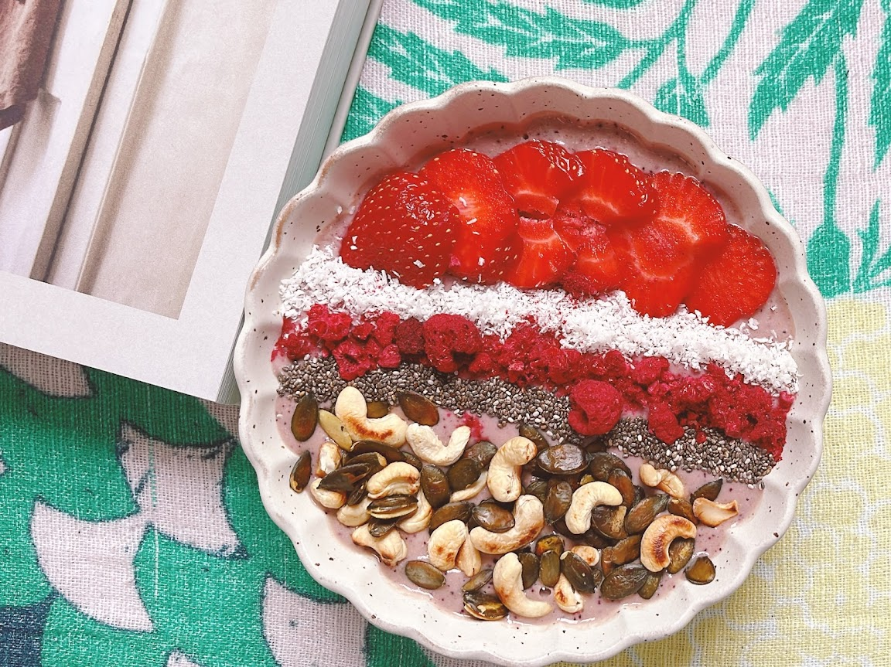

A Soothing Smoothie Bowl #1: Cashew and Berry

When the stress of PhD life gets overwhelming, sometimes the best remedy is a nourishing breakfast that's both beautiful and delicious. This smoothie bowl has been my go-to comfort food during particularly challenging writing sessions.
Ingredients
- 1 cup frozen mixed berries
- 1/2 cup raw cashews (soaked overnight)
- 1 banana
- 1/2 cup almond milk
- 1 tbsp honey (optional)
Toppings
- Fresh berries
- Granola
- Sliced almonds
- A drizzle of honey
Instructions
- Drain and rinse the soaked cashews
- Blend the cashews, frozen berries, banana, and almond milk until smooth
- Add honey if desired and blend briefly
- Pour into a bowl
- Top with fresh berries, granola, almonds, and a drizzle of honey
This bowl is not just breakfast; it's a moment of peace in the chaos of academic life. The smooth, creamy texture combined with the crunch of toppings provides a mindful eating experience that helps ground you for the day ahead.
What's your favorite breakfast for stressful days? Let me know in the comments below!

Comments
Leave a Comment